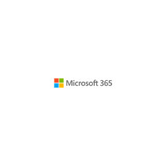
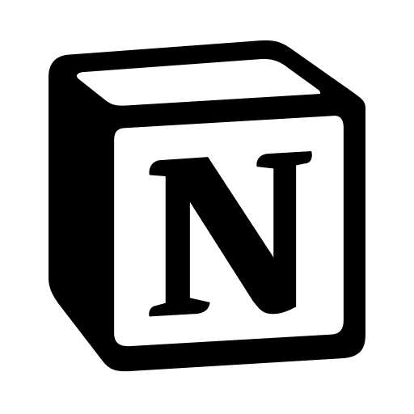
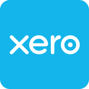
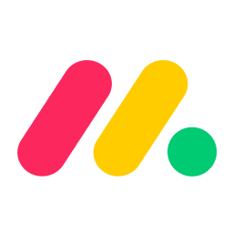

Google Workspace
Email, calendars, documents, and shared files.
These are the platforms I work with to keep business organized, connected, and moving. Your team’s preferred tools are welcome here, too.
Every business has its own way of working. I’m happy to use the tools you need, learn new platforms, and get comfortable with your processes—so working together feels easy.
Email, calendars, documents, and shared files.

Documents, spreadsheets, presentations, and collaboration.

Organized notes, documentation, and team knowledge.
Storefronts, product content, orders, and customer operations.
Inventory records, stock tracking, and fulfillment coordination.

Invoice preparation, tracking, and business records.
View certification ↗
Project boards, operational trackers, and follow-ups.
Team communication and day-to-day coordination.
Tasks, timelines, and project progress.
App connections and recurring workflow automation.
CRM workflows, follow-ups, and business processes.
Drafting, research support, and practical problem-solving.
Writing, organization, and support with custom scripts.
Research support, ideas, and everyday productivity.
Tell me what your team uses and where you need support. I’ll meet you in your workflow.
Let’s talk ↗View my résumé ↗